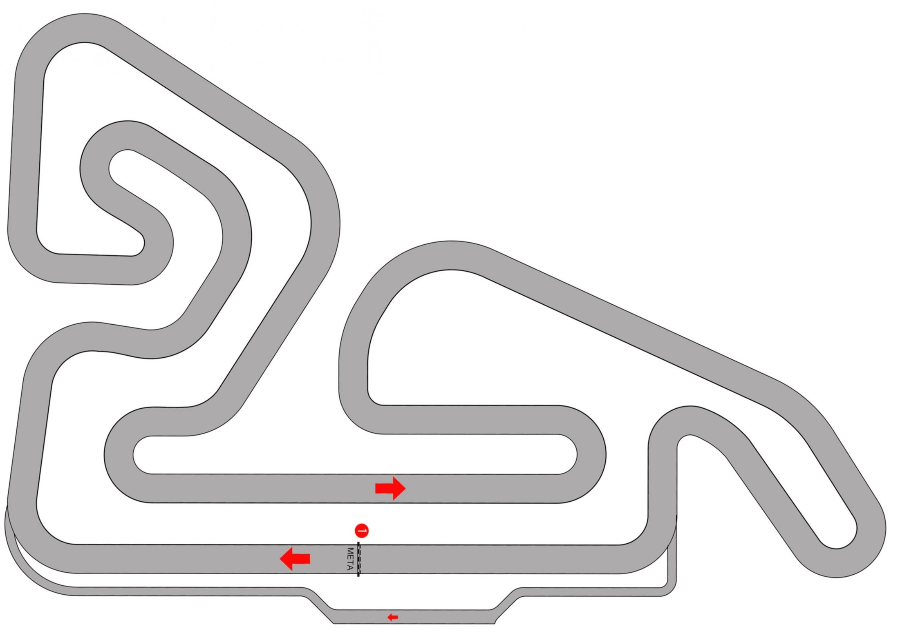
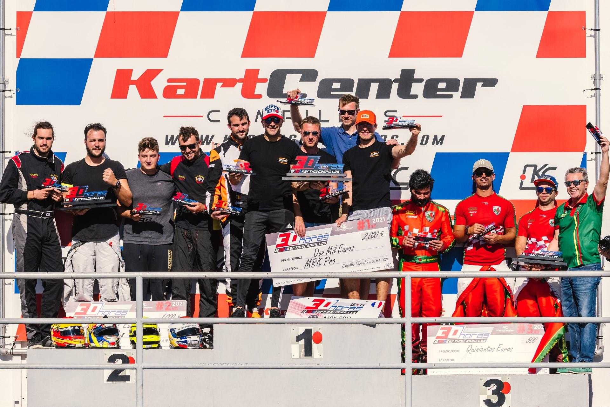

LE CIRCUIT
APEX KART
1580 mètres d'asphalte conçus pour l'adrénaline. 17 virages techniques variés, une ligne droite principale et un tracé pensé pour tous les niveaux.

17 virages techniques
Chaque virage du circuit APEX KART a été pensé pour proposer des défis différents. Découvrez les caractéristiques de chaque section.
| Virage | Type | Difficulté | Conseil |
|---|---|---|---|
| V1 | Épingle droite (sommet) | ●●● | Freinez fort, pivot serré |
| V2 | Gauche d'enchaînement | ●●○ | Restez à l'extérieur |
| V3 | Droite serrée (top) | ●●● | Frein tardif |
| V4 | S gauche enchaînée | ●●○ | Liée au V3 |
| V5 | Boucle droite ext. | ●○○ | Pleine vitesse |
| V6 | Gauche tour extérieur | ●●○ | Maintien de vitesse |
| V7 | Droite retour (top) | ●●● | Trajectoire précise |
| V8 | Sweepeur gauche | ●○○ | Apex large, à fond |
| V9 | Droite entrée milieu | ●●● | Frein progressif |
| V10 | S gauche (milieu) | ●●○ | Rythme continu |
| V11 | S droite (milieu) | ●●○ | Liée au V10 |
| V12 | Gauche descente basse | ●●● | Point de corde serré |
| V13 | Droite entrée boucle | ●●○ | Trajectoire large |
| V14 | Grande épingle gauche | ●●● | Freinage maximum |
| V15 | Droite sortie boucle | ●○○ | Accélérez fort |
| V16 | Gauche retour droite | ●●○ | Fluide et continu |
| V17 | Droite finale (méta) | ●●● | Accélérez dès l'apex |
Les chiffres du circuit
En images





Le circuit en vidéo
Découvrez le circuit APEX KART depuis le cockpit d'un kart. Suivez la trajectoire idéale, analysez les points de freinage et préparez votre prochaine session.
Le tour de référence a été réalisé par notre instructeur en chef avec le record du circuit établi à 1:10:381.
🎧 Ambiance circuit — Sons de moteurs
Règles du circuit
Le respect des règles de sécurité est obligatoire pour tous les pilotes. Un briefing est effectué avant chaque session.
- Port du casque FIA obligatoire pendant toute la session sur piste.
- Ceinture de sécurité bouclée avant le départ des stands.
- Respect des drapeaux signaux : jaune = ralentir, rouge = arrêt immédiat.
- Interdiction de percuter volontairement les autres karts.
- Pas de téléphone portable ni d'objet personnel en piste.
- Rester dans le kart en cas de panne, attendre les commissaires.
- Limiter la vitesse dans les stands : 10 km/h maximum.
- Signaler tout dysfonctionnement au personnel avant la session.
Nos karts
| Modèle | Cylindrée | Vitesse max | Public |
|---|---|---|---|
| Mini Kart | 100cc | 60 km/h | Junior 8–12 ans |
| Standard | 200cc | 75 km/h | Débutant |
| Performance | 270cc | 90 km/h | Senior |
| Compétition | 270cc+ | 108 km/h | Expert |
Entretien : Chaque kart est inspecté et entretenu chaque matin par nos mécaniciens. Vidange moteur toutes les 30 heures, changement de pneus selon l'usure.
VENEZ ROULER SUR L'APEX KART
1580 mètres de piste vous attendent. Réservation en ligne 24h/24.
RÉSERVER MAINTENANT ▶